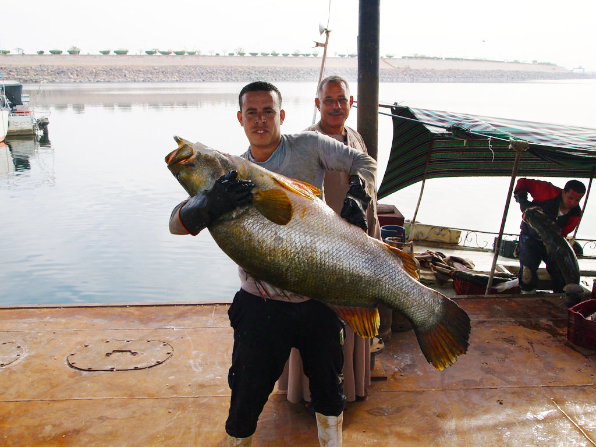

![[Red panda]](images/rusty.jpg) ©2013 Abby Wood, Smithsonian National Zoo
©2013 Abby Wood, Smithsonian National Zoo

©2016 Ashley Halls
Intro video Ruben + Seth
Play with the apple + coconut metaphore
Spotting hypes with Google Trends
![[Results from the Knowledge Graph]](images/drexel.jpg) ©2017 Google
©2017 Google
RDA and Bibframe
Talk shit about Bibframe
Will Linked Data help you find a job ?
 Except where otherwise noted, the content of these slides is licensed under a
Creative Commons Attribution 4.0 International License.
Except where otherwise noted, the content of these slides is licensed under a
Creative Commons Attribution 4.0 International License.
![[Nile perch]](images/friends.jpg)